In the following examples we illustrate how one can obtain discontinuous zero dynamics by using the switched controller ideas. Moreover, we illustrate how incorporating bounded controls induces ``shrinking'' of the region of attraction for the zero dynamics.
There may not exist continuous output zeroing controllers which yield stable zero dynamics, whereas discontinuous output zeroing controllers which achieve this may exist. This was illustrated in the paper [11]. We can also incorporate control and state constraints in the design in a straightforward manner. Hence, the approach is practical and we can construct genuine target sets which need to be reached for the exact output tracking problem.
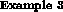
Consider the system
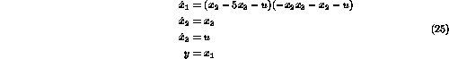
The continuous output zeroing controllers are
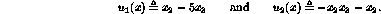
They give the following (continuous) zero dynamics
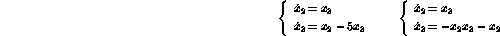
It is easily seen that 0 is an unstable stationary point of both systems. Hence, by applying a continuous output zeroing controller we do not obtain stable zero dynamics. Introduce the Lyapunov function
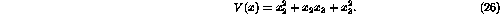
The derivatives of V(x) along solutions to the two systems become
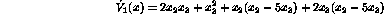
and
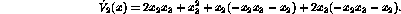
To test if it is possible to find a discontinuous (switched) control law which yields stable zero dynamics with respect to the chosen Lyapunov function, we check the decision problem (12). We get the following formula
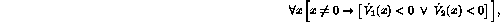
which can be shown to be FALSE and hence it is impossible to prove global stability with the given Lyapunov function. However, performing quantifier elimination in
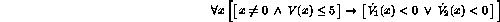
gives TRUE and we have an estimate of the region in which there exists a minimum phase controller
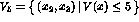
. See Figure 2 for regions where
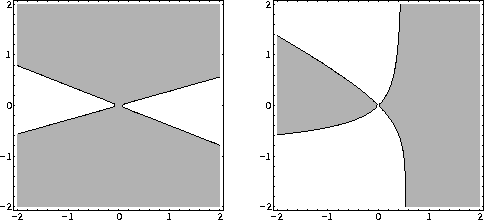
A switched controller that stabilizes the zero dynamics can be implemented using the following switching rule. Initially, choose controller according to
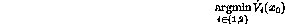
where  denotes the initial state. In the sequel, use the
current controller as long as
denotes the initial state. In the sequel, use the
current controller as long as
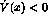
, when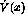
hits zero, switch to the other controller. Due to the overlap between regions defined byIn Figure 3 we show some state trajectories and a time response for the zero dynamics of system (25), when the above control law has been used.
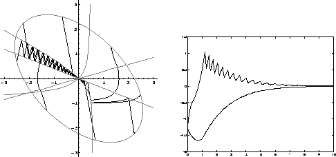
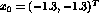
.
It is straightforward to take control constraints into account. Suppose that we have the constraint
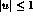
. Then by considering the following decision problem
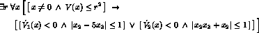
we see that the region of attraction is much smaller than without control constraints. In fact,
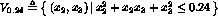
is an estimate of the region of attraction and for only slightly larger values of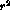
the control constraints prevent controlled invariance of the set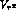
.It may happen that the neither of the solutions which keep the output identically equal to zero is defined on a neighborhood of the equilibrium of interest. However, by combining the different solutions, we may achieve that the domain of definition is a neighborhood of the origin. This is a purely algebraic constraint and we are not aware of any techniques in the literature which could be used for this kind of stability analysis. The constructive power of quantifier elimination is very useful in this case.
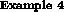
The switched dynamic system considered in this example can be seen as the zero dynamics of the following system
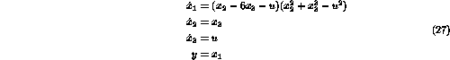
We get three different systems which correspond to the continuous output zeroing controllers
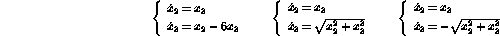
Can we switch between these systems to achieve stability of the zero
dynamics? Observe that the domain of definition of the state
feedback control laws that give the last two systems are not the
whole state space. Furthermore, the first system is unstable so the
zero dynamics cannot be stabilized without switching. We will show
that the zero dynamics can be stabilized by switching despite these
observations. The regions where  are shown in
Figure 4.
are shown in
Figure 4.
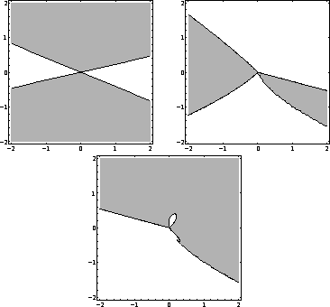
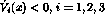
.
Let
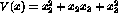
. The derivatives of V(x) along solutions to the systems are
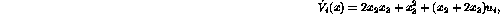
where  is given by one of the solutions to
is given by one of the solutions to
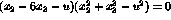
. The modification of the quantifier elimination problem (11) due to the implicit relation between x and u becomes
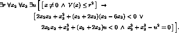
Performing quantifier elimination we can prove that
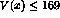
describes a control invariant set in which the zero dynamics can be stabilized by switching.We investigate the example from [11] to show how quantifier elimination can be used to obtain a parameterized set of solutions for the problem - in [11] only numerical solutions were available. We will follow the procedure outlined in Section 3.
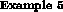
Consider the system
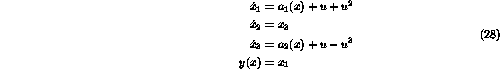
where
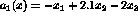
and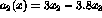
. The control objective is to design a control law which would keep the output identically equal to zero and for which the zero dynamics is stable.There are two output zeroing control laws
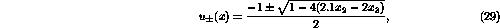
which are well defined on the set
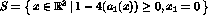
. The zero dynamics is defined by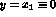
and hence we obtain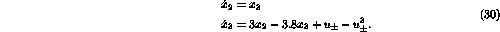
After linearization of (30) at the origin with the choice
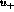
we obtain that the linearized zero dynamics has its eigenvalues at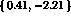
. Similarly, the linearized zero dynamics with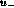
has as eigenvalues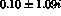
. Hence, for both control laws (29) the corresponding zero dynamics is unstable.The Jacobians obtained by linearizing the zero dynamics (30) is denoted by
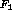
and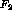
.We compute the Routh-Hurwitz (or Lienard-Chipart) inequalities for
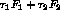
which are parameterized by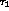
and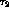
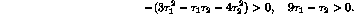
Performing quantifier elimination, we first check the existence of solution (this was verified numerically in [11])
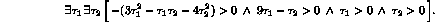
This decision problem can be shown to be TRUE and the system can be stabilized at least locally. If we only eliminate the quantified variable in above formula we obtain . Hence, for any positive there exists for which the positive combination of matrices is Hurwitz.
By fixing any pair of which yields stability, the matrix satisfies a Lyapunov matrix equation. That is, for any matrix with there exists a matrix with which is the solution of
Note that Q introduces another degree of freedom and can be regarded as a design parameter. The following P is a solution of the above matrix equation
With this P we estimate the domain of attraction of the zero dynamics, which is the target set we want to reach if we want exact tracking of constant outputs. By using quantifier elimination we obtain that the ellipsoid defined by is a domain of attraction for the zero dynamics. In fact, the plane which is the boundary of the domain of definition of the switched control laws, is a tangent to this ellipsoid.
The zero dynamics is usually described by nonlinear differential equations and yet this fact is not incorporated sufficiently into the definition of minimum phase. For instance if the zero dynamics has a globally stable limit cycle, the system would be termed non-minimum phase despite that the behavior of the systems when tracking constant outputs may be satisfactory. In this sense the known definition of minimum phase is often misleading. This was tried to overcome in [2] where global stability of an invariant set was suggested as the definition of minimum phase. We believe that the local equilibrium stability and global set stability definitions are just two ends of a wide spectrum of possible situations.
In the following example we show how to use quantifier elimination to estimate the region of attraction of an invariant set for a given zero dynamics.
Consider the system
The question of invariance of a given set can be formulated as follows: Is it possible to choose the control such that the solution trajectory tangent always points inwards along the boundary of the given set, i.e., . Using the Lyapunov function , we can show that the following formula is TRUE
which means that the invariant set has a domain of attraction defined by . If we change to the formula is FALSE. Further analysis is needed to decide how the state behaves inside the ellipsoid (asymptotically stable, limit cycles, etc).
Some of the issues treated here were raised in [11] but we show that for a large class of systems, quantifier elimination provides a tool to test these conditions.
The use of switched output zeroing controllers allow for more flexibility when control and state constraints have to be taken into account. If the goal is to exactly track constant outputs, then fixing the equilibrium around which we wish our zero dynamics to be stable, does not seem to be appropriate. Indeed, it may happen that the zero dynamics system has several different equilibria with (perhaps) disjoint regions of attractions. In order to exactly track the output and have bounded states and control, reaching any of the basins of attraction would satisfy the control objective. Quantifier elimination could be used for such computations.